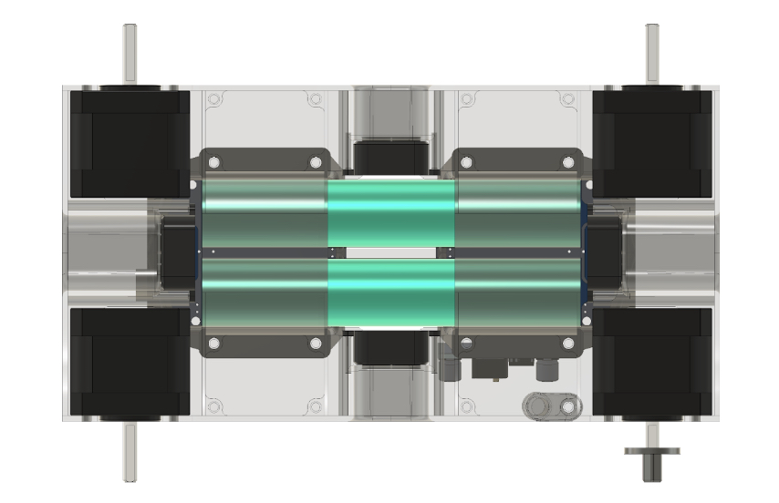

High-Level Design
At its core, our design aims to create a robust hardware platform that performs as expected, so no unnecessary complexity is created in code. Our motor and wheel choices reflect this ethos. Specifically, our drivetrain consists of four independently stepper driven mecanum wheels.
Motors and Wheels

While this initially might seem like a strange choice, given stepper motors’ lower torque and high power requirements, it really played in our favor. Firstly, since we were using four wheel drive, torque was not at all an issue and we easily were able to make it up the ramp at speed. But the big selling point of steppers is their reliable control. Since you are commanding steps per second, you can be confident that all your motors will spin at the same speed, regardless of battery charge. This meant that we didn't have to implement any control logic that dealt with drift, compensated for battery charge, and we could use the mecanums so reliably that we never had to worry about steering. All our motion was lateral translation. The only issue that came up was that steppers do not have closed loop control, this was only a problem since we didn't have time to implement acceleration, commanding a step change in speed sometime meant we lost a couple of steps, which caused the bot to turn a couple of degrees upon acceleration and deceleration.
Chassis
As for the chassis, the entire thing was quite tightly integrated and fully 3D printed. I would highly recommend the latter – while laser cutting seems attractive, it is very easy to design robust single components for 3D printing, with geometries that are hard to accomplish with the laser. Also, iteration time is faster (the printer does all the work) and you don’t have to deal with finger joints and the slop that comes with them. Moreover, not a single part we printed was printed with supports, I would highly recommend putting in the design work to make this happen, as it reduces print and iteration time. The printer can also be pushed beyond what the slicer tells you is possible.